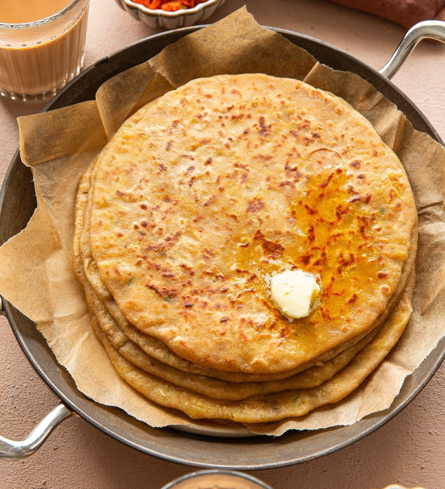

We are going to see some famous indian recipes which are not only tasty but holds a long history and culture in them.

Aloo Paratha are popular Indian flatbreads stuffed with a delicious spiced potato mixture.
Click to view recipe of Aalu Paratha.

Lassi is a cooling and refreshing probiotic drink made with curd or yogurt, sugar or salt, and simple spices or flavorings. Popular in Punjab and North India, it is especially enjoyed during the hot summer months.
Click to view recipe of Lassi.